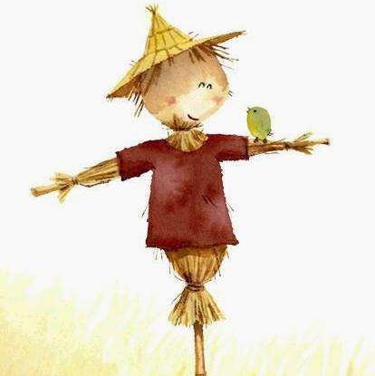

---
layout: default
---

  <section class="mod-page-body">
    <div class="mod-page-main wordwrap clearfix">
      <div class="x-page-container">
        <div class="mod-diary">
          <div class="mod-diary-top"></div>
          <div class="mod-diary-inner">
            <div class="mod-diary-pen"></div>
            <div class="mod-diary-nav"></div>
            <div class="mod-diary-clip"></div>
              
            <section class="mod-topspaceinfo mod-cs-header">
              <div class="head-topbar"></div>
              <div class="container">
                <h1><a class="space-name cs-header-spacename" href="#">我喜欢的文章</a></h1>
                <p class="space-description cs-header-spacesummary"></p>
              </div>
              <div class="head-footer"></div>
            </section>
                
            <div class="mod-blogpage-wraper">
              <div class="blog-bg-main-repeat hide"></div>
              <div class="grid-80 mod-blogpage">
                <div class="blog-bg-main hide"></div>
                <div class="mod-text-content mod-post-content mod-cs-contentblock">
                  <div class="cs-contentblock-bg"></div>
                  <div id="content" class="content mod-cs-content text-content clearfix">

                  <!--### blog ###-->
                  <div id="blog">
                    <p align="center"><font size="5px">原谅</font></p><br>
                    <p>
                      <table width="100%">
                        <tr>
                          <td size="8px">
                            <font size="3px">
						    原谅我稻草似的头发<br>
							不怎么打理<br>
							我以为我的爱人<br>
							只爱我穿过皮肉的灵魂<br><br>
							原谅我消瘦如荒原的胸脯<br>
							不显露弧度<br>
							我以为我的爱人<br>
							只爱我单纯善良的微笑<br><br>
							原谅我热情无害的喧嚣<br>
							我以为我的爱人<br>
							只爱我欢喜无烦恼<br><br>
							以及<br>
							原谅夜色如水的寂夜<br>
							你的左侧<br>
							只是需要<br>
							一个拥抱<br>
							</font>
			  			  </td>
			              <td align="right">
			                
			              </td>
			            </tr>
			          </table>
			        </p>
                  </div>
		          <hr>
		  
		          <div id="blogTwo">
		            <p align="center"><font size="5px">我们做回朋友吧</font></p><br>
                    <p>
                      <font size="3px">
            			你说：“我们做回朋友吧！”<br>
            			那么，请问：<br>
        				我可不可以继续和你分享我的快乐？<br>
        				我可不可以借你的肩膀流泪？<br>
        				我还可以每天和你通电话吗？<br>
        				我想见你的时候，是不是不需要任何的借口？<br>
        				我寂寞的时候，你还会陪我散步吗？<br>
        				我穿得漂漂亮亮去见你的时候，你会称赞我吗？<br>
        				我想搂着你的时候，你会拥抱我吗？<br>
        				我可以知道你跟谁来往吗？她是什么人？你有多喜欢她？<br>
        				我可不可分担你的烦恼？<br>
        				我可不可以帮你做事？<br>
        				我可不可以向你撒娇？<br>
        				我还能够在你家的沙发上睡觉吗？<br>
        				我还可以继续留着你家的钥匙吗？<br>
        				我还可以陪你家人吃饭吗？<br>
        				我可以替你拿衣服去洗吗？<br>
        				如果，今天我很想的话，我可以睡在你旁边吗？<br>
        				你生日的那天，可以跟我一起过吗？<br>
        				我们是不是永不说再见。<br>
        				我要跟你做这种朋友。<br>
        				如果不可以的话，我们便不要做朋友好了。
        			  </font>
	  	  			</p>
	                <embed src="Images/bgsound.mp3" style="float: left">
	  		      </div>  <!--### blog_end ###-->

	            </div>
              </div>
            </div>   
    	  </div> 
        </div>
        
        <!--### mod-diary-bottom ###--> 
        <div class="mod-diary-bottom"></div> 
      </div> 
    </div> 
  </section> 
    	
    	<div style="text-align:center">

